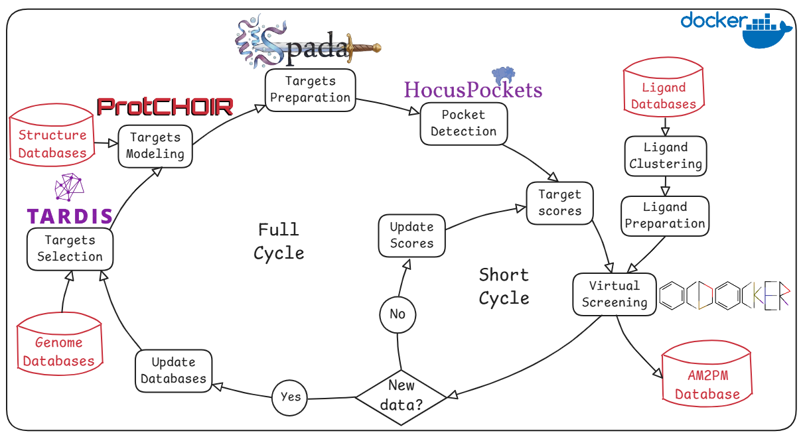

Resumo
A preocupação global com microrganismos multirresistentes cresce de forma constante: estima-se que o número anual de mortes associadas a bactérias resistentes a múltiplos fármacos (MDR) chegue a 8,22 milhões até 2050. O número limitado de antimicrobianos aprovados (cerca de 6,2% dos medicamentos aprovados pela FDA) e de alvos microbianos constitui um gargalo crítico.
Em nosso grupo, utilizamos abordagens computacionais para modelar tanto redes metabólicas, a partir de dados genômicos, quanto interações moleculares em nível estrutural. O objetivo deste projeto é desenvolver e validar uma pipeline automatizada e contínua para prospectar novas entidades químicas com atividade antimicrobiana — priorizando alvos proteicos (TARDIS), modelando todos os alvos selecionados (ProtCHOIR), identificando cavidades exploráveis (HocusPockets), preparando-as para triagem virtual (SPADA) e realizando triagem virtual por consenso baseado em aprendizado de máquina (OCDocker) sobre um banco de ligantes curado (Liggdrasil). Os complexos proteína–ligante preditos serão rigorosamente avaliados e validados por calorimetria isotérmica, alimentando bases de conhecimento organismo-específicas e abertas — repositórios de potenciais moléculas terapêuticas prontamente testáveis in vitro e in vivo por grupos de pesquisa em todo o mundo.
Introdução e Objetivo
Nosso grupo vem, tradicionalmente, aplicando técnicas de modelagem computacional na compreensão de sistemas biológicos e na busca por novos candidatos a fármacos, com contribuições em flavivírus de importância nacional (Zika123, febre amarela4), HIV5, parasitoses (T. cruzi6, T. foetus7) e câncer891011.
Recentemente, voltamos nossos esforços para a modelagem de novos compostos com potencial antimicrobiano. Patógenos bacterianos representam verdadeiras emergências de saúde pública, e estima-se que ocorrerão cerca de 1,91 milhão de mortes atribuíveis à resistência antimicrobiana (RAM) e cerca de 8,22 milhões de mortes associadas à RAM em 205012. As bactérias do grupo ESKAPE (Enterococcus faecium, Staphylococcus aureus, Klebsiella pneumoniae, Acinetobacter baumannii, Pseudomonas aeruginosa e Enterobacter spp.) são listadas pela OMS como patógenos prioritários críticos1314. O modelo tradicional de desenvolvimento de antibióticos não tem fornecido soluções adequadas, em parte por desafios científicos e pela falta de incentivos comerciais.
Nesse sentido, nosso grupo tem focado em uma contribuição inovadora: a Máquina de Prospecção Perpétua de Antimicrobianos (AM2PM), que integra ferramentas disponíveis e recém-desenvolvidas em um pipeline específico para cada organismo. Em contraste com um esforço pontual de descoberta de fármacos, esse motor foi projetado para gerar novas hipóteses terapêuticas de forma iterativa e contínua, aprimorado por inteligência artificial.
Objetivo principal: desenvolver e validar uma pipeline integrada e organismo-específica de prospecção de novos candidatos a fármacos antimicrobianos.
A pipeline AM2PM
O AM2PM é um framework que integra, em um fluxo automatizado e reprodutível, a identificação de alvos bacterianos e a triagem de ligantes baseada em estrutura. Opera em dois ritmos: um ciclo curto, que atualiza os escores dos alvos a cada rodada de triagem virtual, e um ciclo completo, que reconstrói os alvos sempre que surgem novos dados genômicos ou estruturais.

Módulos
Resultados preliminares
ProtCHOIR constrói estruturas oligoméricas de alta qualidade. Avaliando estereoquímica, superfície molecular e interfaces, o ProtCHOIR alcançou, sobre um conjunto de referência de 141 proteínas em diferentes estados oligoméricos, precisão média superior a 91% nos modos de sequência e estrutura. A ferramenta foi publicada e está disponível para a comunidade17.
TARDIS encontra genes essenciais para K. pneumoniae. O modelo metabólico em escala genômica alcançou pontuação MEMOTE média de 85% e previu taxa de crescimento de 65,87 mmol gDW⁻¹ h⁻¹ em meio LB. Entre 21 proteínas metabólicas essenciais identificadas, destacam-se a redutase MurB e a transferase MurG — ambas na biossíntese de peptidoglicano, via crítica da parede celular bacteriana, e também relevantes em P. aeruginosa, A. baumannii e E. faecium.
HocusPockets identifica os sítios de ligação corretos. Sobre 270 estruturas do PDBbind, a abordagem baseada na soma de Fukushima (método quântico) atingiu 91,5% de precisão entre as três primeiras cavidades identificadas.
OCDocker melhora a precisão da triagem. Aplicado a 12 alvos do DUDEz e comparado com 17 estratégias alternativas, o OCScore final alcançou AUC-ROC ≈ 0,76 e RMSE ≈ 0,62, superando o consenso por média aritmética (0,71 e 0,86) e as demais funções de pontuação individuais.
Validação experimental
- Prova de conceito
- Klebsiella pneumoniae e Pseudomonas aeruginosa
- Inibição de crescimento
- Ensaios in vitro contra cepas ESKAPE da coleção do LIMM (colaboração com a Dra. Raquel Bonelli); determinação da concentração inibitória mínima (CIM) e testes de citotoxicidade
- Expressão proteica
- Produção em E. coli e purificação (colaboração com o Dr. Marcius Almeida); pureza avaliada por SDS-PAGE e MALDI-TOF
- Interação ligante–alvo
- Calorimetria de titulação isotérmica (ITC-200, Malvern MicroCal) a 25 °C
- Infraestrutura
- Orquestração com Snakemake em ambiente de computação de alto desempenho (HPC), em contêineres Docker
- Colaborações
- Rede no Brasil e no Reino Unido, incluindo CRAFT Therapeutics (cristalografia de raios X) e GARDP
Impacto e ciência aberta
O projeto fará uso extensivo de bases públicas bem curadas — Protein Data Bank (estruturas), ZINC (pequenas moléculas) e GenBank (dados genômicos anotados). Todos os dados derivados — bibliotecas de ligantes agrupadas, embeddings de descritores e associações proteína–ligante inferidas — serão versionados e documentados, e os fluxos de trabalho compartilhados em repositórios públicos (GitHub, Zenodo), assegurando transparência e reprodutibilidade.
Os resultados serão incorporados ao AM2PMdb, base de acesso aberto concebida como um "motor público de hipóteses" para a descoberta de antimicrobianos, publicada sob licença permissiva (CC BY ou MIT). O tratamento de dados seguirá os princípios FAIR (Encontráveis, Acessíveis, Interoperáveis e Reutilizáveis), e novas associações curadas poderão ser submetidas de volta às bases de origem (p. ex. ChEMBL). Os módulos de software serão registrados como Propriedade Intelectual, mas permanecerão livremente disponíveis para uso e aperfeiçoamento pela comunidade. A arquitetura foi concebida para ser posteriormente adaptada a diferentes patógenos bacterianos, protozoários e virais.